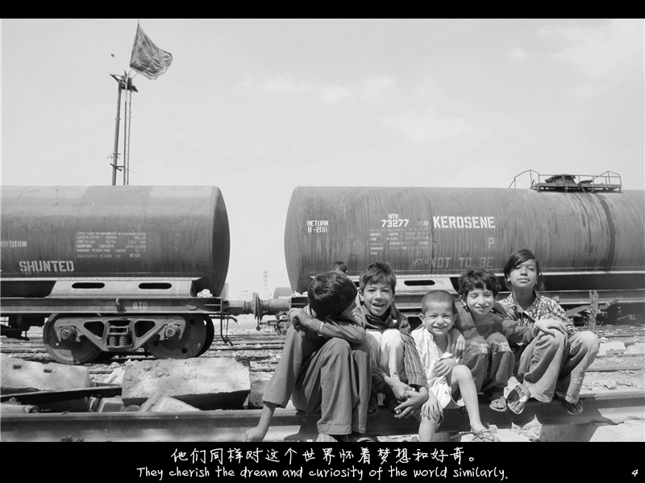

正文: 洗涤心灵、找到真实的自我什么的，我境界没那么高，还没这么高的感悟。
但是我觉得旅行中遇到的人和事，可能真的会改变你的人生。
说一说我大二时去巴基斯坦6周的经历吧。当时也不是纯去玩儿的，是通过AIESEC（国际经济学商学学生会）去巴基斯坦的经济之都——“卡拉奇”做公益项目。
我当时在一个名叫“Naya Jeevan”的非营利组织（NGO）工作。原本计划是去学校教英文，后来发现完全没法沟通，穷学校的孩子们一点英语都不会说，只会说乌尔都语。我就自己发了个项目——教孩子们编中式的手链，把他们编的手链拿去大学、活动上卖，给孩子们筹集善款。
入乡随俗，穿个当地的衣服。
去了一个残疾人学校，教那边的老师编中式手链：

巴基斯坦人真的很喜欢中国，我遇到的每个人都很尊敬、喜欢中国人。
贫富差距也很大。有钱人的活动：
真正的贫穷
在那之前我去过陕西蓝田县一个小村支教过，那儿的条件也还不错，就是普通的农村。总之在去巴基斯坦之前我还没亲眼见过真正的贫穷。
在巴基斯坦，去了普通的学校。狭小空间挤了30多个孩子、散发着异味的教室。
这个学校在废弃火车站旁边，简直是个垃圾场…
还去了洪灾受灾人民的营地。
灾民住的不能再简陋的帐篷……就是用树枝、绳子、石头来搭建、固定的。
灾民做饭的地方……
洗头是这样洗的……
我知道国内也有很多很穷很穷的地方，但是木有亲眼看到过。那些贫穷的场景从电视里走出来，真的出现在你眼前的时候，那种感觉真的不一样，真的是心被刺痛的难过T T。我到现在偶尔都会梦到在巴基斯坦看见的场景……> <
做真正想做的事！
在巴基斯坦，遇到一个美国人，叫Tobb，他说的话我可能这一辈子都会记得。
Tobb是我工作的NGO老板的朋友。他是哈佛大学毕业的，在巴基斯坦创立了自己的NGO，帮助那些地震灾民和洪灾灾民。我见到他的第一天，他刚被抢劫了……
巴基斯坦人是非常非常痛恨美国人的。因为巴基斯坦和印度关系很恶劣嘛，然后美国又帮印度，你懂的……
我当时特别不能理解，就问那个美国人：巴基斯坦人那么讨厌美国人，你为什么不在美国找个好工作，过个舒适的生活，为什么要来巴基斯坦做NGO呢？
他说：“每个人对好的工作、好的生活的定义不同。对我来说，这就是好的工作、好的生活。美国政府对巴基斯坦所做的很多事，在我眼里都是不对的。作为一个美国人，我觉得我应该做点什么，来弥补些政府的过错。”
说得我竟无言以对。以前和国内身边的人一样，想的都是工作、车子、房子、结婚和孩子。人生追求好单一……Tobb的话对我影响还挺大的，做自己喜欢做的事，多一点社会责任感。
我在后来的研究生专业选择和职业选择上，都是按照自己的兴趣所来，做过的每一份工作，都是自己喜欢的。我现在就在一个科技媒体“硅谷密探”工作哈。欢迎大家关注我们的机构号 @硅谷密探或者微信公众号硅谷密探（svs-007）~~
每！天！都！开！心！
NGO的老板叫Asher，也是个从哈佛毕业的人。

聪明和能力强不说，每天都特别开心乐观，幽默感爆棚，真的是我到现在为止见过的最开心乐观的人。公司的人说从来没见过他哪天苦着个脸过。真的是每天都开心！他不光自己开心，还会深深影响周围的人。
我做项目碰到各种困难的时候，艾玛，那个愁的呀。加上当时刚失恋大半年，还是个伤春悲秋的小姑娘……就是很容易负能量爆棚……> <他就心很宽地安慰我：项目嘛总会有解决方法的。然后就帮我各种想办法。
虽然到现在都还没办法做到像他那样那么乐观。还是会加油的哈哈哈！
更爱公益
在巴基斯坦看到贫苦、遇到的美国人Tobb、巴基斯坦老板Asher等等，都让我更爱公益。6周很短，回国之后，也还是想再做点什么。大三一直很忙，做了诺丁汉大学AIESEC分会的出境交流部总监，后来又去了英国诺丁汉做交换生。一直到大四才开始着手，我用我当时自己拍的照片，做了两套明信片，在我们学校青年志愿者协会的帮助下，用这两套明信片众筹了一笔钱，给到之前在巴基斯坦工作过的NGO，帮贫困的孩子们买健康保险。
就是这两套明信片啦，一套是关于风景，一套关于孩子，每一套都是一个故事。（可能字小看不清，当时还是个佳能G10的渣相机，图片质量也没那么好。。大家随意看看吧）
文化风景：


孩子们的：


哦对了，当时回来前，AIESEC卡拉奇的小伙伴们还给我做了卡片，小眼泪！
恩，总之，去认识不同文化背景的人，去看不同的风景，真的会改变一个人呢（认真脸）。